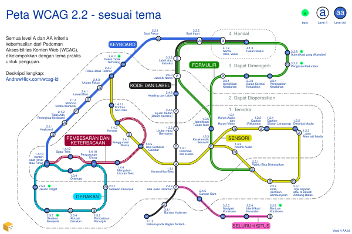

This is an extract of the Indonesian WCAG map page published on AndrewHick.com/wcag-id. Copy and paste the following code into the main page HTML files.
↓ START OF CODE TO COPY ↓
Peta WCAG 2.2 - sesuai tema
Diagram ini mengelompokkan semua kriteria keberhasilan dari Pedoman Aksesibilitas Konten Web (WCAG) sesuai temanya, dalam versi 2.2, level A dan AA.
Peta ini mengilustrasikan hubungan antara berbagai kriteria yang tidak tersampaikan dalam pedoman aslinya. Sebagai contoh, semua kriteria yang bisa diuji menggunakan keyboard berada dalam satu jalur yang sama. Struktur ini sebagian besar berdasarkan pohon keputusan WCAG yang memberikan penjelasan cara pengujian tiap kriteria.
Peta

{kind=link}
Deskripsi
Peta menyerupai jaringan kereta komuter, mencakup 55 kriteria keberhasilan sebagai stasiunnya dengan 7 jalur.
Setiap penanda stasiun menjelaskan apakah kriteria tersebut level A atau AA. Keempat prinsip WCAG digambarkan sebagai zona yang bergerak keluar dari tengah menggunakan garis putus-putus tipis:
- 1.x.x - Terindra (berada di pusat)
- 2.x.x - Dapat Dioperasikan
- 3.x.x - Dapat Dimengerti
- 4.x-x - Handal (terjauh dari pusat)
Setiap jalur dideskripsikan secara rinci pada bagian selanjutnya. Beberapa nama kriteria sedikit disederhanakan.
Keyboard
Kriteria ini memastikan setiap fungsionalitas dapat bekerja dengan keyboard, dengan kondisi fokus yang terlihat.
Jalur ini berwarna biru solid dan berjalan dari barat ke utara.
| Nomor | Kriteria keberhasilan | Level | Persimpangan |
|---|---|---|---|
| 1.4.13 | Konten saat Hover atau Fokus | AA | |
| 2.1.1 | Keyboard | A | tidak ada |
| 2.1.2 | Tidak Ada Perangkap Keyboard | A | tidak ada |
| 2.1.4 | Shortcut Tombol Karakter | A | tidak ada |
| 2.4.1 | Lewati Blok | A | tidak ada |
| 2.4.3 | Urutan Fokus | A | tidak ada |
| 2.4.7 | Fokus Jelas Terlihat | AA | |
| 2.4.11 | Fokus Tidak Terhalang baru | AA | tidak ada |
| 3.2.1 | Saat Fokus | A | tidak ada |
| 3.2.2 | Saat Input | A | |
| 4.1.2 | Nama, Role, Value | A |
Pembesaran dan Keterbacaan
Kriteria ini memastikan kalau teks:
- dapat terbaca ketika diperbesar atau dtambahkan spasi
- disimpan sebagai teks ketimbang gambar
- dapat dikontrol ketika muncul saat di-hover atau difokuskan
Jalur ini berwarna merah gelap dengan dua buah garis putih di dalamnya, berjalan ke barat dari tengah.
| Nomor | Kriteria keberhasilan | Level | Persimpangan |
|---|---|---|---|
| 1.4.3 | Kontras | AA | |
| 1.4.5 | Teks Berbasis Gambar | AA | |
| 1.4.4 | Mengubah Ukuran Teks | AA | tidak ada |
| 1.4.10 | Reflow | AA | |
| 1.4.12 | Spasi Teks | AA | tidak ada |
| 1.4.13 | Konten saat Hover atau Fokus | AA |
Sensori
Kriteria ini mencegah konten hanya bisa diakses dengan indera tertentu, dengan memastikan:
- memiliki cukup kontras
- tidak mengandalkan penglihatan, warna, pendengaran, atau waktu
- menginhdari distraksi audio atau video
Jalur ini berwarna kuning dengan garis tepi hitam, berjalan dari barat laut ke timur dengan agak sedikit memutar dari bagian Karakteristik Sensori.
| Nomor | Kriteria keberhasilan | Level | Persimpangan |
|---|---|---|---|
| 2.4.7 | Fokus Jelas Terlihat | AA | |
| 1.4.11 | Kontras Non-Teks | AA | tidak ada |
| 1.4.3 | Kontras | AA | |
| 1.4.1 | Penggunaan Warna | A | tidak ada |
| 1.4.5 | Teks Berbasis Gambar | AA | |
| 1.1.1 | Konten Non-Teks | A | |
| 1.3.3 | Karakteristik Sensorik | A | |
| 1.2.1 | Hanya Audio dan Hanya Video | A | tidak ada |
| 1.2.2 | Caption (Rekaman) | A | tidak ada |
| 1.2.4 | Caption (Siaran Langsung) | AA | tidak ada |
| 1.2.5 | Deskripsi Audio | AA | tidak ada |
| 1.2.3 | Deskripsi Audio atau Alternatif Media | A | tidak ada |
| 1.4.2 | Kontrol Audio | A | tidak ada |
| 2.2.1 | Waktu Bisa Disesuaikan | A | |
| 2.2.2 | Jeda, Hentikan, Sembunyikan | A | tidak ada |
| 2.3.1 | Tiga Kejapan atau di Bawah Ambang Batas | A | tidak ada |
Kode dan Label
Kriteria ini memastikan konten kompatibel dengan teknologi bantu:
- presentasi visual di-coding secara konsisten
- diberikan label yang sesuai
Formulir memiliki kriteria tambahan.
Jalur ini berwarna hitam dengan garis tepi putih, berjalan dari selatan ke utara.
| Nomor | Kriteria keberhasilan | Level | Persimpangan |
|---|---|---|---|
| 3.1.2 | Bahasa pada Bagian Tertentu | AA | tidak ada |
| 3.1.1 | Bahasa Halaman | A | tidak ada |
| 2.4.2 | Ada Judul Halaman | A | |
| 1.1.1 | Konten Non-Teks | A | |
| 1.3.1 | Informasi dan Relasi | A | tidak ada |
| 1.3.2 | Urutan yang Bermakna | A | tidak ada |
| 2.4.4 | Tujuan Tautan (Dalam Konteks) | A | tidak ada |
| 2.4.6 | Heading dan Label | AA | tidak ada |
| 2.5.3 | Label di Nama | A | |
| 3.3.2 | Label atau Instruksi | A | |
| 3.2.2 | Saat Input | A | |
| 4.1.2 | Nama, Role, Value | A | |
| 4.1.3 | Pesan Status | AA |
Formulir
Kriteria ini memastikan formulir yang dapat digunakan:
- tidak bergantung pada waktu atau instruksi sensori
- memiliki instruksi dan pesan kesalahan yang sesuai
- interaktif dengan teknologi bantu
- mudah dipakai dan diselesaikan
Jalur ini berwarna hijau dengan satu garis putih di dalamnya, berjalan dari tengah-timur ke utara. Jalur ini berputar balik di Identifikasi Tujuan Input.
| Nomor | Kriteria keberhasilan | Level | Persimpangan |
|---|---|---|---|
| 2.2.1 | Waktu Bisa Disesuaikan | A | |
| 1.3.3 | Karakteristik Sensorik | A | |
| 1.3.5 | Identifikasi Tujuan Isian | AA | tidak ada |
| 2.5.3 | Label di Nama | A | |
| 3.3.2 | Label atau Instruksi | A | |
| 3.2.2 | Saat Input | A | |
| 4.1.2 | Nama, Role, Value | A | |
| 4.1.3 | Pesan Status | AA | |
| 3.3.1 | Identifikasi Kesalahan | A | tidak ada |
| 3.3.3 | Saran Koreksi Kesalahan | AA | tidak ada |
| 3.3.4 | Pencegahan Kesalahan | AA | tidak ada |
| 3.3.7 | Pengisian Redundan baru | A | tidak ada |
| 3.3.8 | Autentikasi yang Aksesibel baru | AA | tidak ada |
Gerakan
Kriteria ini memastikan setiap fungsionalitas:
- tidak bergantung pada gerakan, gerakan menyeret, atau gerakan motion
- bekerja pada layar kecil, baik potret atau lanskap
- mengurangi risko mengaktifkan aksi secara tidak sengaja
Jalur ini berwarna biru langit dengan garis tepi hitam dan garis hitam di dalamnya, berjalan berputar di area barat daya.
| Nomor | Kriteria keberhasilan | Level | Persimpangan |
|---|---|---|---|
| 1.4.13 | Konten saat Hover atau Fokus | AA | |
| 1.3.4 | Orientasi | AA | tidak ada |
| 1.4.10 | Reflow | AA | |
| 2.5.1 | Gerakan Penunjuk | A | tidak ada |
| 2.5.2 | Pembatalan Penunjuk | A | tidak ada |
| 2.5.4 | Aktuasi Gerakan | A | tidak ada |
| 2.5.7 | Gerakan Menyeret baru | AA | tidak ada |
| 2.5.8 | Ukuran Target baru | AA | tidak ada |
Seluruh Situs
Kriteria ini harus diuji pada keseluruhan situs, untuk memastikan:
- nama, menu, dan mekanisme bantu muncul secara konsisten
- setiap laman memiliki judul yang deskriptif
- ada berbagai cara untuk mengakses tiap laman
Jalur ini berwarna merah muda dengan dua garis hitam di dalamnya, berjalan dari selatan ke tenggara.
| Nomor | Kriteria keberhasilan | Level | Persimpangan |
|---|---|---|---|
| 2.4.2 | Ada Judul Halaman | A | |
| 2.4.5 | Banyak Cara | AA | tidak ada |
| 3.2.3 | Navigasi Konsisten | AA | tidak ada |
| 3.2.4 | Identifikasi Konsisten | AA | tidak ada |
| 3.2.6 | Bantuan Konsisten baru | A | tidak ada |
Alternatif dan ucapan terima kasih
Terima kasih banyak kepada Muhammad Kautsar dan Rifat Najmi atas terjemahannya dalam Bahasa Indonesia!
Versi lain dan ucapan terima kasih terdapat pada laman peta AA dalam Bahasa Inggris.
Lisensi
Terima kasih sudah berkunjung! Karya ini dilisensikan dengan Creative Commons: CC BY-NC 4.0


Saya senang jika ada yang menggunakan atau mengadaptasi peta ini, tapi mohon:
- berikan kredit, dengan tautan balik ke versi dengan deskripsi lengkap pada AndrewHick.com/wcag-id
- bagikan atau adaptasi secara aksesibel (misalnya menambahkan alternatif berupa teks pada gambar apapun)
- minta izin saya sebelum penggunaan secara komersil
↑ END OF CODE TO COPY ↑